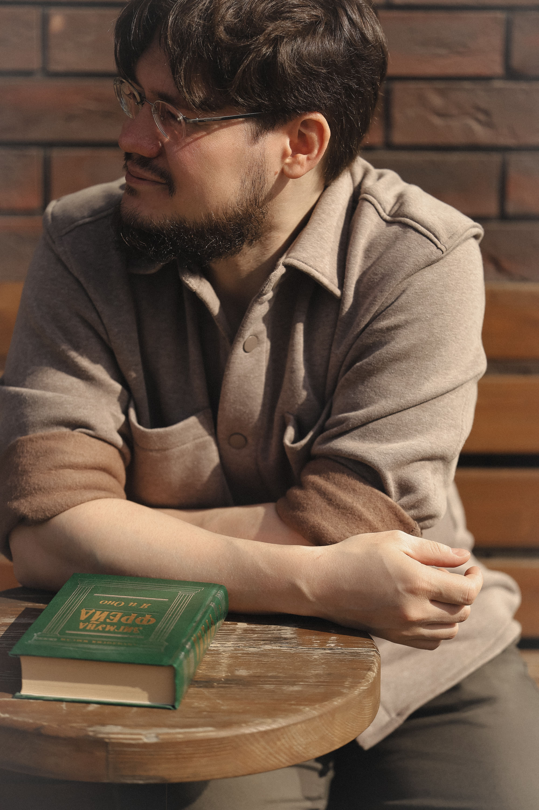
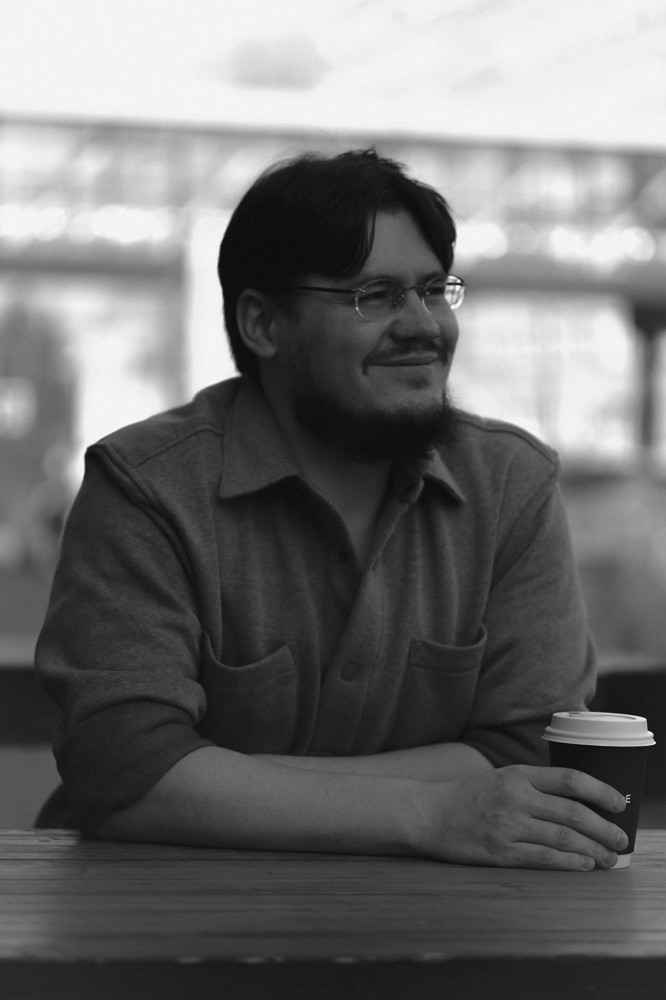
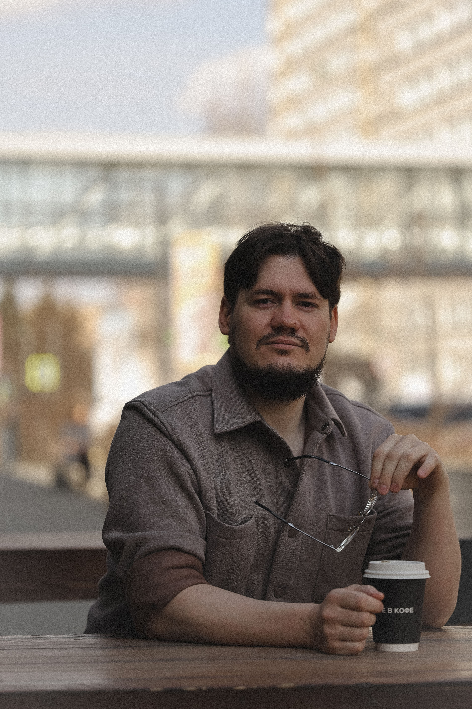

Индивидуальное консультирование взрослых. Помогаю справляться с тревогой, кризисами и трудностями в отношениях — находить опору в себе и жить в согласии с собой.
Записаться на консультацию Узнать больше
Человек, а не функция
Меня зовут Константин Кульков. Я психолог и Гештальт-терапевт. Работаю со взрослыми — индивидуально, очно и онлайн.
В профессии с 2012 года, а в помогающих профессиях — с 2008-го. За это время успел поработать в системе образования, кризисных центрах, частных центрах и частной практике. Через мой кабинет прошли более двух тысяч клиентов.
В своей работе опираюсь на Гештальт-подход: помогаю замечать, что происходит здесь и сейчас, возвращать себе чувства и опору, находить способ жить в согласии с собой.
Мне важно, чтобы в кабинете было честно и по-настоящему. Я не работаю «по протоколу» — я работаю с человеком, который пришёл.


Как я работаю
Работаю в русле Гештальт-терапии — направления, которое опирается на феноменологию, теорию поля и диалог. В центре внимания — не интерпретации и не «правильные» объяснения, а непосредственный опыт человека.
Вместо того чтобы искать причины и вешать ярлыки, мы наблюдаем то, что проявляется здесь и сейчас. Чувства, телесные реакции, образы, оговорки — материал для совместного исследования, а не повод для поспешных выводов.
Человек не существует в вакууме — он всегда находится в поле отношений, ситуаций, контекстов. Мы смотрим не только на внутренние процессы, но и на то, как они разворачиваются в вашей жизни: в семье, работе, отношениях, в самом кабинете.
Терапия — это встреча двух людей, а не воздействие на пациента. Я не «лечу» и не «исправляю» — я присутствую, слушаю и вместе с вами исследую то, что происходит. Подлинный контакт — и есть основной инструмент работы.
Цель работы — не «решить проблему» раз и навсегда, а расширить способность замечать: свои чувства, потребности, способы реагирования. Из этого осознавания постепенно рождаются изменения — естественные и устойчивые.
Экзистенциальная основа Гештальта — признание свободы и ответственности человека. Мы исследуем, как вы делаете выбор, что стоит за вашими решениями, и как можно вернуть себе авторство собственной жизни.
Принципы работы
Всё, что происходит в кабинете, остаётся между нами. Это не формальность, а основа безопасных отношений.
В кабинете можно быть любым. Я не оцениваю, не ставлю диагнозов «на глаз» и не даю непрошеных советов.
Мы движемся в том темпе, который выдерживает ваша психика. Я не тороплю и не тяну. Если нужно остановиться и «побыть с этим» — мы остановимся.
Я говорю то, что вижу, — с уважением, но без увиливания. Иногда это может быть неудобно, но именно так возможны реальные изменения.
Я не воздействую на вас и не «исправляю». Терапия — это совместная работа, в которой изменения рождаются из вашего собственного осознавания.
Встречи проходят в устойчивом формате: раз в неделю, в одно и то же время. Это создаёт предсказуемость, в которой может разворачиваться живой процесс.
Практическая информация
Челябинск, домашний кабинет. Тихая, безопасная обстановка.
Видеозвонок из любой точки мира. Формат, который работает не хуже очного.
Знакомство, обсуждение запроса и того, как нам будет удобно работать.
Профессиональный опыт с 2008 года
Темы, с которыми можно прийти
Постоянное беспокойство, панические состояния, трудности со сном, ощущение, что не получается расслабиться.
Сложности в близких и рабочих отношениях, конфликты, повторяющиеся сценарии, одиночество, потеря контакта с близкими.
Потеря, расставание, смена работы, выгорание, экзистенциальные вопросы, поиск смысла и опоры.
Низкая самооценка, самокритика, трудности с чувствами, ощущение «не на своём месте», поиск себя.
Работа с телесным напряжением, психосоматическими симптомами, возвращение контакта с телом.
Размышления о терапии, Гештальте и жизни
Разбираемся, откуда растёт метод: гештальт-психология, психоанализ, философия и Дзен.
Как я менял своё отношение к работе через экран — и что в итоге понял.
Какой только не бывает. Разоблачаем миф о «кушетке и кресле».
О квалиа, феноменологии и том, почему мы никогда не узнаем, как видит мир другой.
Книга, которую, по моему мнению, стоит прочитать каждому.
Что Гештальт взял от Дзен — и в чём с ним разошёлся.
Коротко о главном
Напишите мне, и мы подберём удобное время
Написать мне